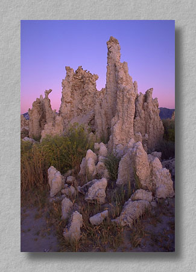

|  |
#173205 Tufa Towers Mono Lake, California This photo was taken at sunrise one very cold fall morning at the South Tufa Area along the south shore of Mono Lake. The towers are made of calcium carbonate and are created when calciumated fresh water from underwater springs combine with the carbonated salt water of the main lake body. Normally these formations are underwater. They were exposed when the city of Los Angeles started to divert the water from Mono Lake's feeder streams in 1941. |

|

| 
|
| This site Copyright © 1998 Mike Sisk, All Rights Reserved. No form of reproduction, including copying or saving of digital image files, or the alteration or manipulation of said image files is permitted. Any unauthorized use of these images will be prosecuted to the full extent of federal copyright laws. |